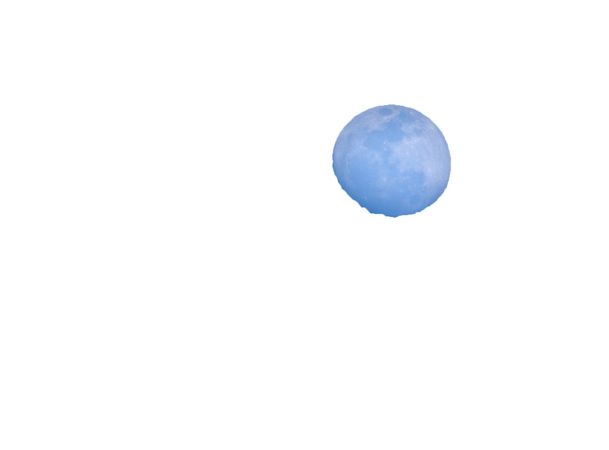

<table>
  <tr>
    <th>
<br>
<html>welcome to the second page</html>
<br><br><br><br><br><br><br><br><br><br><br><br><br><br><br><br><br><br><br><br><br><br><br><br><br><br><br><br>
       <div class="topright">
      <a href="https://wohl34.github.io/precession/"></a>
       </div>
<html><head><style> img {
  display: block;
  width: 60%;
  margin-left: auto;
  margin-right: auto;}
  body {
  background-image: url("images/daytimesky-vnabmey-pixabay.png");
  background-repeat: no-repeat;
  color: white; background-size: cover; background-position: bottom right } 
</style></head>
<br>
</html>
  </th>
  </tr>
</table> 
